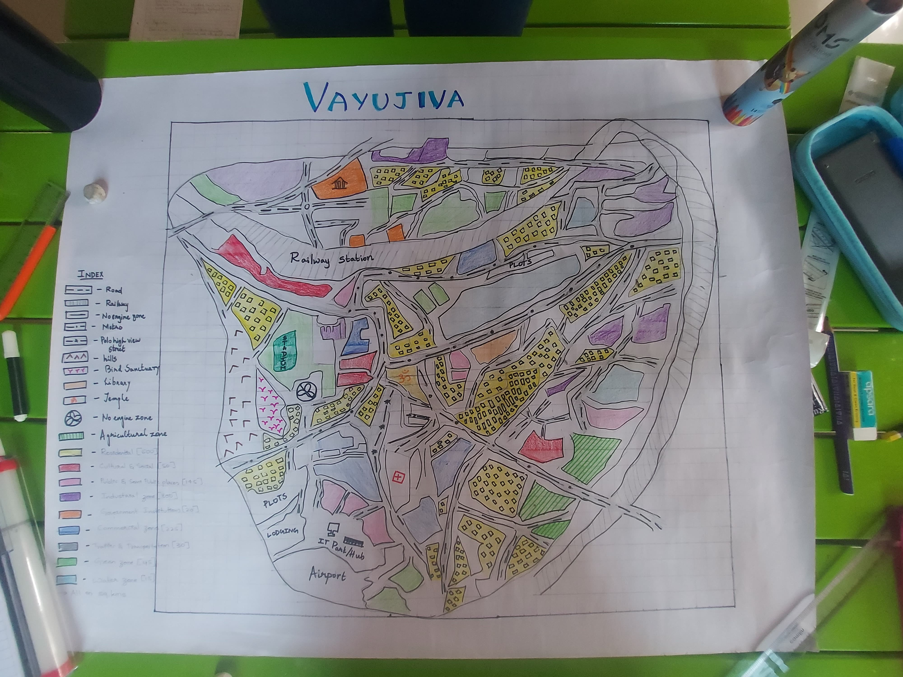

City Plan

Problem Statement
Urban mobility faces issues like traffic congestion, lack of parking, and slow emergency response. A smart system that manages traffic, parking, and emergencies can improve efficiency and reduce delays
Project Description
Detailed description of the project
View DescriptionBusiness Cases Identified
| SL NO | Business Case Identified | Description | Owner | Problem Tools |
|---|---|---|---|---|
| 1 | Real-time Traffic Monitoring | Collect, process, and store traffic data in real-time using IoT devices and sensors. | Ananya B P | Arrays, Hashing, Sparse Table |
| 2 | Citizen Feedback Processing | Collect, analyze, and act on citizen feedback regarding traffic issues. | Ria | Brute Force String Search, Rabin-Karp, Lookup Table |
| 3 | Smart Traffic Signal Control | Dynamically adjust signal timings based on traffic flow and congestion. | Sanjana | Heap, AVL Tree, BFS, Binary Search Tree |
| 4 | Smart Parking Systems | Use Trie to store and search for parking space availability in real time, providing instant updates. | Chinmayi K B | Trie, Queue |
| 5 | Emergency Vehicle Routing | Implement a 2-3 Tree to handle route optimization for emergency vehicles, ensuring minimal delay. | Ria and Sanjana | 2-3 Tree, Dijkstra’s Algorithm |
| 6 | EV Charging Station Management | Locate and manage EV charging stations in the city. | Ananya and Chinmayi | Binary Search Tree, Trie, Arrays |